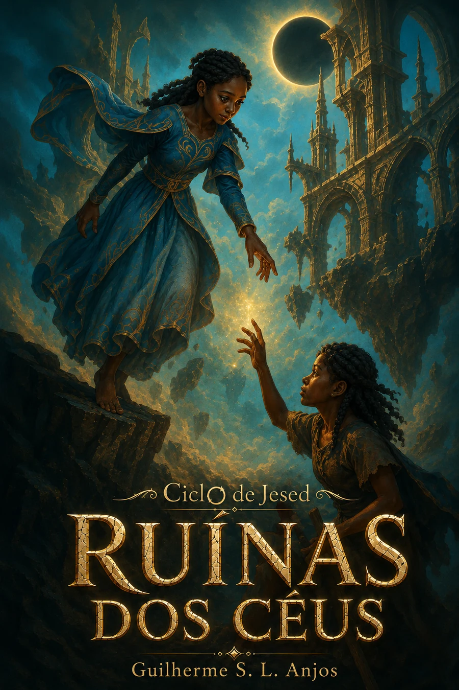

Etérea
Ilhas suspensas, ritos do vento e uma sociedade que transforma culpa em “peso”, enquanto sinais físicos da queda são tratados como ameaça espiritual.

Ciclo de Jesed · Livro I
Etérea acredita ter vencido o peso, a violência e a queda. Quando pedras começam a desprender-se das ilhas e os ventos silenciam, Jokara descobre que a paz do céu foi construída sobre verdades escondidas. O cataclismo a lança em Nadírion, onde sobreviver significa abandonar certezas sem perder a capacidade de recomeçar.
Percurso
Ilhas suspensas, ritos do vento e uma sociedade que transforma culpa em “peso”, enquanto sinais físicos da queda são tratados como ameaça espiritual.
A verdade chega tarde demais. As ilhas se partem, os laços de Jokara são destruídos e o mundo conhecido cai sobre uma superfície que o povo dizia não existir.
Sem o vento como resposta, sobreviventes aprendem fogo, caça, abrigo, perda e convivência. Das ruínas nasce a primeira possibilidade de uma nova raiz.
Narrativa escrita
Pessoas e sopros
Etérea e Nadírion